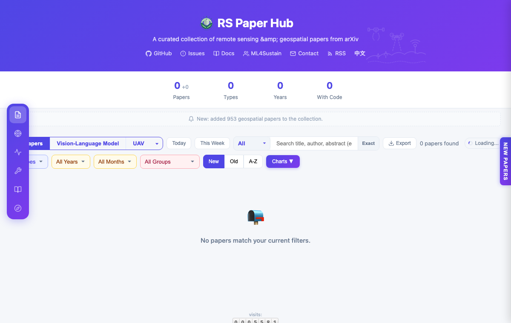

社区项目
这些项目由社区持续维护，覆盖论文整理、模型发布、数据集与可运行演示。每个项目都尽量保留清晰的入口和可复现材料。
Community Focus
社区关注什么
我们关注遥感智能如何被更多研究者使用、复现和改进，并逐步服务环境、城市、农业和灾害等真实问题。
模型
开放权重、检测器、生成模型与可运行演示系统
数据
面向真实遥感任务的数据集、基准与实验材料
论文
围绕遥感、机器学习和 SDGs 持续整理论文与方向